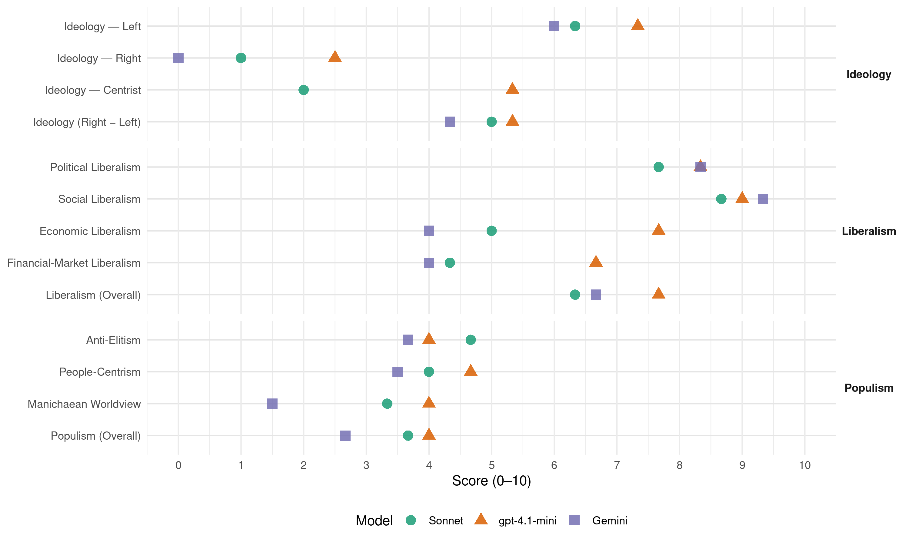

90/Greens (Germany, 1998)
manifesto_id 41113_199809
Get full text: This site shows derived annotations and short verbatim quotes only. The full manifesto text is © Manifesto Project / WZB — obtain it via manifesto-project.wzb.eu using the manifesto_id above.
Headline scores
| Dimension | Sonnet | gpt-4.1-mini | Gemini |
|---|---|---|---|
| Populism (Overall) | 3.7 | 4.0 | 2.7 |
| Anti-Elitism | 4.7 | 4.0 | 3.7 |
| People-Centrism | 4.0 | 4.7 | 3.5 |
| Manichaean Worldview | 3.3 | 4.0 | 1.5 |
| Ideology (Right − Left) | 5.0 | 5.3 | 4.3 |
| Liberalism (Overall) | 6.3 | 7.7 | 6.7 |
| Political Liberalism | 7.7 | 8.3 | 8.3 |
| Social Liberalism | 8.7 | 9.0 | 9.3 |
| Economic Liberalism | 5.0 | 7.7 | 4.0 |
| Financial-Market Liberalism | 4.3 | 6.7 | 4.0 |
Evidence per dimension
Economic Liberalism
Gemini · score 6.0 · verified · chunk 1
“Marktwirtschaft ökologisch und sozial erneuern”
Die Marktwirtschaft ökologisch und sozial erneuern BÜNDNIS 90/DIE GRÜNEN setzen auf ein Wirtschafts- und Technologiekonzept
Gemini · score 4.0 · verified · chunk 2
“Wettbewerbsnachteile dieser Betriebsgrößen ausgleichen”
Dabei wollen wir die Wettbewerbsnachteile dieser Betriebsgrößen ausgleichen und eine verbesserte
Gemini · score 2.0 · verified · chunk 3
“statt Wirtschaft und Gesellschaft im Sinne neoliberaler Ideologie”
eine gemeinsame Politik der Regulierung der Wirtschaftsbeziehungen ist notwendig Europa braucht – vor allem zur Bekämpfung der Massenerwerbslosigkeit – einen stabilen wirtschaftspolitischen Rahmen, statt Wirtschaft und Gesellschaft im Sinne neoliberaler Ideologie den blinden Marktkräften zu überlassen
gpt-4.1-mini · score 8.0 · verified · chunk 1
“Marktwirtschaft ökologisch und sozial erneuern”
BÜNDNIS 90/DIE GRÜNEN setzen auf ein Wirtschafts- und Technologiekonzept, das die Marktwirtschaft ökologisch und sozial und im Sinne der Gleichstellung von Frauen und Männern erneuert Mit Rezepten von gestern sind die Probleme der Gegenwart und Zukunft nicht zu bewältigen
gpt-4.1-mini · score 7.0 · verified · chunk 2
“Die Stärkung der Eigenkapitalbasis der kleinen und mittleren Unternehmen soll durch den Aufbau eines funktionsfähigen Risikokapitalmarktes als Alternative zum Bankensystem erfolgen”
Die Stärkung der Eigenkapitalbasis der kleinen und mittleren Unternehmen soll durch den Aufbau eines funktionsfähigen Risikokapitalmarktes als Alternative zum Bankensystem erfolgen Eine überregionale Informationsbörse, an der potentielle Risikokapitalgeber und Beteiligungsnehmer zusammengeführt werden, ist ein erster Schritt Mittel- bis langfristig soll die Beteiligungsfinanzierung die Kreditverbilligung ablösen
gpt-4.1-mini · score 8.0 · verified · chunk 3
“Wir wollen die Kennzeichnung von Produkten mit einem einheitlichen Gütesiegel (trans-fair) fördern”
Das Entwicklungsprogramm der Vereinten Nationen schätzt bereits heute, daß die Verluste in Entwicklungsländern durch ungleichen Marktzugang die weltweiten Entwicklungshilfeleistungen um das Zehnfache übersteigen Deshalb setzen wir uns für bessere Marktzugangsmöglichkeiten für nachhaltig produzierte Produkte aus den ärmsten Entwicklungsländern zum Beispiel durch Absatzförderung in Deutschland ein Wir wollen die Kennzeichnung von Produkten mit einem einheitlichen Gütesiegel (trans-fair) fördern und ausweiten, bei deren Herstellung und Verbreitung ökologische und soziale Mindeststandards eingehalten werden
Sonnet · score 6.0 · verified · chunk 1
“fairen Wettbewerb, der Innovation fördert”
Einen fairen Wettbewerb, der Innovation fördert, als Korrektiv der Konzentration wirtschaftlicher Macht wirkt und Marktzutrittschancen verbessert
Sonnet · score 5.0 · mixed · chunk 2
“Wettbewerbsnachteile dieser Betriebsgrößen ausgleichen”
wollen wir die Wettbewerbsnachteile dieser Betriebsgrößen ausgleichen und eine verbesserte Qualifikationsförderung durchsetzen
Sonnet · score 4.0 · verified · chunk 3
“statt Wirtschaft und Gesellschaft im Sinne neoliberaler Ideologie”
Europa braucht – vor allem zur Bekämpfung der Massenerwerbslosigkeit – einen stabilen wirtschaftspolitischen Rahmen, statt Wirtschaft und Gesellschaft im Sinne neoliberaler Ideologie den blinden Marktkräften zu überlassen
Financial-Market Liberalism
Gemini · score 5.0 · verified · chunk 1
“Aufbau eines funktionsfähigen privaten Risikokapitalmarktes”
Parallel muß der Wettbewerb in der Finanzwirtschaft gestärkt werden Besonders wichtig ist der Aufbau eines funktionsfähigen privaten Risikokapitalmarktes, um die Finanzierungsbedingungen
Gemini · score 3.0 · verified · chunk 2
“Umsatzsteuer auf Devisengeschäfte erheben”
wollen BÜNDNIS 90/DIE GRÜNEN eine Umsatzsteuer auf Devisengeschäfte erheben (Tobinsteuer) Der
gpt-4.1-mini · score 7.0 · verified · chunk 1
“Kontrolle verschärfen Monopolstrukturen müssen aufgelöst”
BÜNDNIS 90/DIE GRÜNEN wollen das Gesetz gegen Wettbewerbsbeschränkungen reformieren und die Fusionskontrolle verschärfen Monopolstrukturen müssen aufgelöst, Wirtschaftsmacht eingeschränkt und kleine und mittlere Unternehmen geschützt werden
gpt-4.1-mini · score 6.0 · verified · chunk 2
“Der EU kommt hierbei eine Schlüsselrolle zu, um auch in der OECD und schließlich weltweit eine solche Regelung durchzusetzen”
Zur Verminderung von Spekulation wollen BÜNDNIS 90/DIE GRÜNEN eine Umsatzsteuer auf Devisengeschäfte erheben (Tobinsteuer) Der EU kommt hierbei eine Schlüsselrolle zu, um auch in der OECD und schließlich weltweit eine solche Regelung durchzusetzen Dies belastet langfristige Kapitalanlagen kaum; Spekulationen mit minimalen Renditeunterschieden lohnen sich aber nicht mehr
gpt-4.1-mini · score 7.0 · verified · chunk 3
“Wir setzen uns für eine konsequente Reform und Demokratisierung der internationalen Finanzinstitutionen”
BÜNDNIS 90/DIE GRÜNEN setzen sich für eine konsequente Reform und Demokratisierung der internationalen Finanzinstitutionen sowie der WTO mit dem Ziel ein, deren Politik ökologisch und sozial umzugestalten, die Beteiligungsrechte von NGOs zu erweitern, sowie die öffentliche Kontrolle und Transparenz zu erhöhen Politik der globalen Solidarität muß bei uns anfangen Eine umwelt- und entwicklungsverträgliche Außen-, Finanz-, Wirtschafts-, Landwirtschafts- und Handelspolitik ist die wichtigste Voraussetzung für eine zukunftsfähige Entwicklung im Norden wie im Süden
Sonnet · score 6.0 · verified · chunk 1
“Aufbau eines funktionsfähigen privaten Risikokapitalmarktes”
Besonders wichtig ist der Aufbau eines funktionsfähigen privaten Risikokapitalmarktes, um die Finanzierungsbedingungen insbesondere für kleine und mittlere Unternehmen als TrägerInnen von Innovationen und Arbeitsplätzen zu verbessern
Sonnet · score 3.0 · verified · chunk 2
“Umsatzsteuer auf Devisengeschäfte erheben (Tobinsteuer)”
Zur Verminderung von Spekulation wollen BÜNDNIS 90/DIE GRÜNEN eine Umsatzsteuer auf Devisengeschäfte erheben (Tobinsteuer)
Sonnet · score 4.0 · verified · chunk 3
“Reform und Demokratisierung der internationalen Finanzinstitutionen”
BÜNDNIS 90/DIE GRÜNEN setzen sich für eine konsequente Reform und Demokratisierung der internationalen Finanzinstitutionen sowie der WTO mit dem Ziel ein, deren Politik ökologisch und sozial umzugestalten
Political Liberalism
Gemini · score 8.0 · verified · chunk 1
“Wir wollen die Demokratie ausbauen”
Wir wollen den Sozialstaat durch Erneuerung sichern Wir wollen die Demokratie ausbauen Wir wollen eine Politik, die auch den Ländern
Gemini · score 8.0 · verified · chunk 2
“wichtiges Element demokratischer Mitgestaltung”
Die Tarifautonomie ist ein wichtiges Element demokratischer Mitgestaltung BÜNDNIS 90/DIE GRÜNEN
Gemini · score 9.0 · verified · chunk 3
“Die direkte Einflußnahme auf politische Entscheidungen”
bürgerrechtlicher Standards und dem Staatsverdruß wollen wir mit einer Demokratieoffensive begegnen Die direkte Einflußnahme auf politische Entscheidungen, gerade zwischen Wahlen, zum Beispiel durch Volksentscheid
gpt-4.1-mini · score 8.0 · verified · chunk 1
“Bürgerrechte, Demokratie und öffentliche Sicherheit”
Zukunft gestalten durch Bildung und Wissenschaft 47 Bürgerrechte, Demokratie und öffentliche Sicherheit 52 Außenpolitischer Aufbruch ins 21. Jahrhundert 62 HerausgeberIn: BÜNDNIS 90/DIE GRÜNEN Bundesgeschäftsstelle Referat Öffentlichkeitsarbeit
gpt-4.1-mini · score 8.0 · verified · chunk 2
“Die Haushalte der Kommunen verdeutlichen den drohenden Zusammenbruch der kommunalen Selbstverwaltung”
Artikel 28 Absatz 2 des Grundgesetzes lautet: ”Den Gemeinden muß das Recht gewährleistet sein, alle Angelegenheiten der örtlichen Gemeinschaft im Rahmen der Gesetze in eigener Verantwortung zu regeln” Doch die Wirklichkeit ist weit von diesem Anspruch entfernt Die Haushalte der Kommunen verdeutlichen den drohenden Zusammenbruch der kommunalen Selbstverwaltung Die Gestaltungsspielräume wurden in den letzten Jahren drastisch eingeengt und die Durchführung der kommunalen Aufgaben ist vielfach nicht mehr gewährleistet
gpt-4.1-mini · score 9.0 · verified · chunk 3
“Bürgerrechte und Demokratie ausbauen”
BÜNDNIS 90/DIE GRÜNEN wollen mit den Prinzipien Solidarität, Gleichberechtigung, Schutz von Bürgerrechten und Erweiterung der Demokratie dieses Land zukunftsfähig machen Wir sind die Partei, die für die Bürgerrechte eintritt Bürgerrechte und Demokratie ausbauen Das Eintreten für Bürgerrechte ist eine Wurzel grüner Politik in Ost und West Dem rasanten Abbau bürgerrechtlicher Standards und dem Staatsverdruß wollen wir mit einer Demokratieoffensive begegnen Die direkte Einflußnahme auf politische Entscheidungen, gerade zwischen Wahlen, zum Beispiel durch Volksentscheid und die Einführung von Verbandsklagerechten, sowie ein Recht auf Akteneinsicht stärken das Vertrauen in die Demokratie
Sonnet · score 8.0 · verified · chunk 1
“Wir wollen die Demokratie ausbauen”
BÜNDNIS 90/DIE GRÜNEN stehen für Nachhaltigkeit, soziale Gerechtigkeit, Demokratie und Gleichberechtigung der Frauen. Wir wollen die Demokratie ausbauen.
Sonnet · score 7.0 · verified · chunk 2
“demokratische Selbstbestimmung und gesellschaftliche Verantwortung”
Grüne Bildungs- und Wissenschaftspolitik setzt auf demokratische Selbstbestimmung und gesellschaftliche Verantwortung statt staatlicher Bevormundung
Sonnet · score 8.0 · verified · chunk 3
“Demokratisierung der Wissenschaftsorganisationen”
BÜNDNIS 90/DIE GRÜNEN wollen die Öffentlichkeit und Transparenz von Forschung erhöhen durch die Demokratisierung der Wissenschaftsorganisationen, diskursiv und breit angelegte Formulierung von Leitbildern und Forschungsprogrammen
Liberalism (Overall)
Gemini · score 7.0 · verified · chunk 1
“Wir wollen die Demokratie ausbauen”
Wir wollen den Sozialstaat durch Erneuerung sichern Wir wollen die Demokratie ausbauen Wir wollen eine Politik, die auch den Ländern
Gemini · score 6.0 · verified · chunk 2
“wichtiges Element demokratischer Mitgestaltung”
Die Tarifautonomie ist ein wichtiges Element demokratischer Mitgestaltung BÜNDNIS 90/DIE GRÜNEN
Gemini · score 7.0 · verified · chunk 3
“Die direkte Einflußnahme auf politische Entscheidungen”
bürgerrechtlicher Standards und dem Staatsverdruß wollen wir mit einer Demokratieoffensive begegnen Die direkte Einflußnahme auf politische Entscheidungen, gerade zwischen Wahlen, zum Beispiel durch Volksentscheid
gpt-4.1-mini · score 8.0 · verified · chunk 1
“Marktwirtschaft ökologisch und sozial erneuern”
BÜNDNIS 90/DIE GRÜNEN setzen auf ein Wirtschafts- und Technologiekonzept, das die Marktwirtschaft ökologisch und sozial und im Sinne der Gleichstellung von Frauen und Männern erneuert Mit Rezepten von gestern sind die Probleme der Gegenwart und Zukunft nicht zu bewältigen
gpt-4.1-mini · score 7.0 · verified · chunk 2
“Die Haushalte der Kommunen verdeutlichen den drohenden Zusammenbruch der kommunalen Selbstverwaltung”
Artikel 28 Absatz 2 des Grundgesetzes lautet: ”Den Gemeinden muß das Recht gewährleistet sein, alle Angelegenheiten der örtlichen Gemeinschaft im Rahmen der Gesetze in eigener Verantwortung zu regeln” Doch die Wirklichkeit ist weit von diesem Anspruch entfernt Die Haushalte der Kommunen verdeutlichen den drohenden Zusammenbruch der kommunalen Selbstverwaltung Die Gestaltungsspielräume wurden in den letzten Jahren drastisch eingeengt und die Durchführung der kommunalen Aufgaben ist vielfach nicht mehr gewährleistet
gpt-4.1-mini · score 8.0 · verified · chunk 3
“Bürgerrechte und Demokratie ausbauen”
BÜNDNIS 90/DIE GRÜNEN wollen mit den Prinzipien Solidarität, Gleichberechtigung, Schutz von Bürgerrechten und Erweiterung der Demokratie dieses Land zukunftsfähig machen Wir sind die Partei, die für die Bürgerrechte eintritt Bürgerrechte und Demokratie ausbauen Das Eintreten für Bürgerrechte ist eine Wurzel grüner Politik in Ost und West Dem rasanten Abbau bürgerrechtlicher Standards und dem Staatsverdruß wollen wir mit einer Demokratieoffensive begegnen Die direkte Einflußnahme auf politische Entscheidungen, gerade zwischen Wahlen, zum Beispiel durch Volksentscheid und die Einführung von Verbandsklagerechten, sowie ein Recht auf Akteneinsicht stärken das Vertrauen in die Demokratie
Sonnet · score 7.0 · verified · chunk 1
“Nachhaltigkeit, soziale Gerechtigkeit, Demokratie und Gleichberechtigung”
BÜNDNIS 90/DIE GRÜNEN stehen für Nachhaltigkeit, soziale Gerechtigkeit, Demokratie und Gleichberechtigung der Frauen
Sonnet · score 6.0 · verified · chunk 2
“Gleichberechtigung sowie Teilhabe betont”
BÜNDNIS 90/DIE GRÜNEN stellen dem ein solidarisches gesundheitspolitisches Reformprogramm entgegen, das Gleichberechtigung sowie Teilhabe betont
Sonnet · score 6.0 · verified · chunk 3
“Schutz von Bürgerrechten und Erweiterung der Demokratie”
BÜNDNIS 90/DIE GRÜNEN wollen mit den Prinzipien Solidarität, Gleichberechtigung, Schutz von Bürgerrechten und Erweiterung der Demokratie dieses Land zukunftsfähig machen
Anti-Elitism
Gemini · score 4.0 · verified · chunk 1
“selbstgefälligen Kanzler, der gesellschaftliche Bewegung ignoriert”
Für Jugendliche, die teilweise nichts anderes erlebt haben als einen selbstgefälligen Kanzler, der gesellschaftliche Bewegung ignoriert oder diffamiert, würde die Bereitschaft
Gemini · score 4.0 · verified · chunk 2
“unsoziale Klientelpolitik”
Selbständige leisten - unsoziale Klientelpolitik BÜNDNIS 90/DIE GRÜNEN
Gemini · score 3.0 · verified · chunk 3
“Die Regierung Kohl versucht, von ihrem Versagen abzulenken”
mit autoritären und hilflosen Konzepten begegnet Die Regierung Kohl versucht, von ihrem Versagen abzulenken, indem sie Feindbilder auf- und zugleich Bürgerrechte
gpt-4.1-mini · score 7.0 · verified · chunk 1
“Die Regierung Kohl hat kein Problem gelöst, aber alle verschärft”
Die Regierung Kohl hat kein Problem gelöst, aber alle verschärft und das Land in eine Sackgasse geführt Sie hatte die Schwierigkeiten der alten Bundesrepublik vor ’89 nicht bewältigt Sie hat den neuen Bundesländern keine blühenden Landschaften gebracht
gpt-4.1-mini · score 2.0 · verified · chunk 2
“Die Regierung Kohl hat beim Aufbau Ost auf veraltete Konzepte gesetzt”
Die Arbeitslosigkeit in Ostdeutschland ist noch immer doppelt so hoch wie im Durchschnitt der Bundesrepublik und die ostdeutsche Wirtschaft von einem selbsttragenden Aufschwung weit entfernt Die Regierung Kohl hat beim Aufbau Ost auf veraltete Konzepte gesetzt statt auf Zukunftsfähigkeit Sie hat die einmalige Chance, den Neuaufbau einer ganzen Volkswirtschaft mit der Weichenstellung auf nachhaltiges Wirtschaften zu verbinden, sträflich vertan Umsteuern in Richtung Zukunft - Aufbaulasten gerecht verteilen
gpt-4.1-mini · score 3.0 · verified · chunk 3
“Die Regierung Kohl versucht, von ihrem Versagen abzulenken, indem sie Feindbilder auf- und zugleich Bürgerrechte und Demokratie abbaut”
Diese Entwikklung ist Ergebnis einer Politik, die auf Vergötterung von Erfolg, auf Ellenbogengesellschaft, auf die Ausgrenzung von Schwachen und den Abbau demokratischer Beteiligungsrechte gerichtet ist Den Herausforderungen, die der rasante gesellschaftliche Wandel aufwirft, wird mit autoritären und hilflosen Konzepten begegnet Die Regierung Kohl versucht, von ihrem Versagen abzulenken, indem sie Feindbilder auf- und zugleich Bürgerrechte und Demokratie abbaut BÜNDNIS 90/DIE GRÜNEN wollen mit den Prinzipien Solidarität, Gleichberechtigung, Schutz von Bürgerrechten und Erweiterung der Demokratie dieses Land zukunftsfähig machen
Sonnet · score 6.0 · verified · chunk 1
“Die neoliberale Angebotspolitik der Kohl-Regierung ist gescheitert”
Mit Rezepten von gestern sind die Probleme der Gegenwart und Zukunft nicht zu bewältigen. Die neoliberale Angebotspolitik der Kohl-Regierung ist gescheitert: Die steuerliche Entlastung der Besserverdienenden, die Umverteilung von unten nach oben
Sonnet · score 4.0 · verified · chunk 2
“Regierung Kohl hat beim Aufbau Ost auf veraltete Konzepte gesetzt”
Die Regierung Kohl hat beim Aufbau Ost auf veraltete Konzepte gesetzt statt auf Zukunftsfähigkeit Sie hat die einmalige Chance… sträflich vertan
Sonnet · score 4.0 · verified · chunk 3
“Regierung Kohl versucht, von ihrem Versagen abzulenken”
Den Herausforderungen, die der rasante gesellschaftliche Wandel aufwirft, wird mit autoritären und hilflosen Konzepten begegnet. Die Regierung Kohl versucht, von ihrem Versagen abzulenken, indem sie Feindbilder auf- und zugleich Bürgerrechte und Demokratie abbaut
Ideology — Centrist
gpt-4.1-mini · score 6.0 · verified · chunk 1
“Die Menschen wissen, daß es so nicht weitergehen kann”
Das Ende der Kohl-Zeit ist absehbar Die Menschen wissen, daß es so nicht weitergehen kann Aber die Angst vor einer Veränderung ist auch unübersehbar Auf diese Angst zielt die Vorbereitung einer großen Koalition
gpt-4.1-mini · score 5.0 · verified · chunk 2
“Die Regionen selbst sollen in regionalen, demokratisch legitimierten Entwicklungskonzepten die Leitbilder für eine wünschenswerte Wirtschaftsstruktur formulieren”
Die alleinige Orientierung der Regionalförderpolitik am Kriterium Export wollen wir aufgeben Die Regionen selbst sollen in regionalen, demokratisch legitimierten Entwicklungskonzepten die Leitbilder für eine wünschenswerte Wirtschaftsstruktur formulieren, die Grundlage der Mittelvergabe werden Sowohl in der Analyse als auch in den Leitbildern und bei den Projekten der regionalen Entwicklungskonzepte sind Fraueninteressen gleichberechtigt zu berücksichtigen
gpt-4.1-mini · score 5.0 · verified · chunk 3
“Demokratische Entscheidungsstrukturen unter gleichberechtigter Mitwirkung aller Hochschulangehörigen”
BÜNDNIS 90/DIE GRÜNEN treten ein für die Selbständigkeit der Hochschulen in Finanz-, Personal- und Planungsfragen Demokratische Entscheidungsstrukturen unter gleichberechtigter Mitwirkung aller Hochschulangehörigen und eine effektive Verwaltung sind Voraussetzung, um diese Eigenständigkeit sinnvoll auszugestalten In den Regionen sollen künftig Hochschulkuratorien eingerichtet werden, die zwischen Hochschule und Staat einerseits sowie zwischen Hochschulen und gesellschaftlicher Öffentlichkeit, der die Hochschulen primär verantwortlich sind, andererseits vermitteln
Sonnet · score 2.0 · verified · chunk 1
“Grün ist der Wechsel”
Präambel. Grün ist der Wechsel! Es ist Zeit für einen Wechsel. Die Bundesrepublik braucht eine neue, eine soziale und ökologische Politik.
Sonnet · score 2.0 · verified · chunk 2
“Leitlinien sind Gerechtigkeit, Berechenbarkeit und Solidität”
Unsere Leitlinien sind Gerechtigkeit, Berechenbarkeit und Solidität Unsere Hauptziele sind die ökologische Ausrichtung des Wirtschaftens
Sonnet · score 2.0 · verified · chunk 3
“Wir sind die Partei, die für die Bürgerrechte eintritt”
BÜNDNIS 90/DIE GRÜNEN wollen mit den Prinzipien Solidarität, Gleichberechtigung, Schutz von Bürgerrechten und Erweiterung der Demokratie dieses Land zukunftsfähig machen. Wir sind die Partei, die für die Bürgerrechte eintritt
Ideology — Left
Gemini · score 6.0 · verified · chunk 1
“Umverteilung zugunsten der Unternehmen und Vermögenden”
Die Kluft zwischen Arm und Reich wächst Die öffentlichen Haushalte sind kaputtgespart Die privaten Vermögen Weniger florieren Die Steuerpolitik fördert die Umverteilung zugunsten der Unternehmen und Vermögenden, die NormalverdienerInnen belastet sie um so mehr
Gemini · score 6.0 · verified · chunk 2
“Abgabe auf Vermögen über zwei Millionen”
befristet - eine Abgabe auf Vermögen über zwei Millionen DM von bis zu
Gemini · score 6.0 · verified · chunk 3
“der Globalisierung der Profitwirtschaft muß eine Globalisierung”
der Globalisierung der Profitwirtschaft muß eine Globalisierung der gesellschaftlichen Solidarität entgegengesetzt werden Eine internationale
gpt-4.1-mini · score 7.0 · verified · chunk 1
“Die Steuerpolitik fördert die Umverteilung zugunsten der Unternehmen und Vermögenden”
Die Steuerpolitik fördert die Umverteilung zugunsten der Unternehmen und Vermögenden, die NormalverdienerInnen belastet sie um so mehr Die Globalisierung mußte als standortgefährdendes Schreckgespenst für die Einschnitte ins soziale Netz herhalten
gpt-4.1-mini · score 8.0 · verified · chunk 2
“Wir wollen den radikalen Abbau von Steuervergünstigungen – alle Einkünfte sollen gleich behandelt werden”
BÜNDNIS 90/DIE GRÜNEN wollen den radikalen Abbau von Steuervergünstigungen – alle Einkünfte sollen gleich behandelt werden; die Steuerfreistellung des lebensnotwendigen Existenzminimums – der Grundfreibetrag in der Einkommensteuer wird auf 15| 000 DM/Jahr erhöht; die Steuersätze senken: der Eingangssteuersatz soll 18,5% betragen und der Spitzensteuersatz 45% ab einem zu versteuernden Einkommen von 120| 000 DM/Jahr
gpt-4.1-mini · score 7.0 · verified · chunk 3
“Wir setzen uns für eine soziale und ökologische Friedensordnung ein”
BÜNDNIS 90/DIE GRÜNEN wollen eine EU, in der · ökologische und soziale Reformen auf nationaler und europäischer Ebene einander ergänzen und fördern, · der Binnenmarkt gemeinschaftlich gestaltet wird, · Demokratie politisches Leitprinzip ist, · Konfliktprävention Vorrang hat und militärischen Interventionen eine Absage erteilt wird Mit dem Vertrag von Amsterdam wurde die gemeinschaftliche zivile Außenpolitik nicht genügend gestärkt, sondern durch die enge Anbindung der WEU und die Aufnahme gemeinsamer militärischer Aktionen bis hin zu militärischen Kampfeinsätzen die Tür weiter geöffnet in Richtung auf eine Militärmacht EU Dies lehnen wir strikt ab
Sonnet · score 7.0 · verified · chunk 1
“die Umverteilung von unten nach oben und der Abbau von ArbeitnehmerInnenrechten”
Die steuerliche Entlastung der Besserverdienenden, die Umverteilung von unten nach oben und der Abbau von ArbeitnehmerInnenrechten haben trotz Wirtschaftswachstums nicht zu zusätzlichen Arbeitsplätzen geführt
Sonnet · score 7.0 · verified · chunk 2
“Vermögensteuer in Höhe von einem Prozent wieder einführen”
BÜNDNIS 90/DIE GRÜNEN wollen die Vermögensteuer in Höhe von einem Prozent wieder einführen Vermögen bis zu 400.000 DM soll steuerfrei bleiben
Sonnet · score 5.0 · verified · chunk 3
“Globalisierung der Profitwirtschaft muß eine Globalisierung”
der Globalisierung der Profitwirtschaft muß eine Globalisierung der gesellschaftlichen Solidarität entgegengesetzt werden. Eine internationale Strukturpolitik ist notwendig
Ideology (Right − Left)
Gemini · score 4.0 · verified · chunk 1
“Umverteilung zugunsten der Unternehmen und Vermögenden”
Die Kluft zwischen Arm und Reich wächst Die öffentlichen Haushalte sind kaputtgespart Die privaten Vermögen Weniger florieren Die Steuerpolitik fördert die Umverteilung zugunsten der Unternehmen und Vermögenden, die NormalverdienerInnen belastet sie um so mehr
Gemini · score 5.0 · verified · chunk 2
“Abgabe auf Vermögen über zwei Millionen”
befristet - eine Abgabe auf Vermögen über zwei Millionen DM von bis zu
Gemini · score 4.0 · verified · chunk 3
“der Globalisierung der Profitwirtschaft muß eine Globalisierung”
der Globalisierung der Profitwirtschaft muß eine Globalisierung der gesellschaftlichen Solidarität entgegengesetzt werden Eine internationale
gpt-4.1-mini · score 6.0 · verified · chunk 1
“Die Regierung Kohl hat kein Problem gelöst, aber alle verschärft”
Die Regierung Kohl hat kein Problem gelöst, aber alle verschärft und das Land in eine Sackgasse geführt Sie hatte die Schwierigkeiten der alten Bundesrepublik vor ’89 nicht bewältigt Sie hat den neuen Bundesländern keine blühenden Landschaften gebracht
gpt-4.1-mini · score 5.0 · verified · chunk 2
“Wir wollen den radikalen Abbau von Steuervergünstigungen – alle Einkünfte sollen gleich behandelt werden”
BÜNDNIS 90/DIE GRÜNEN wollen den radikalen Abbau von Steuervergünstigungen – alle Einkünfte sollen gleich behandelt werden; die Steuerfreistellung des lebensnotwendigen Existenzminimums – der Grundfreibetrag in der Einkommensteuer wird auf 15| 000 DM/Jahr erhöht; die Steuersätze senken: der Eingangssteuersatz soll 18,5% betragen und der Spitzensteuersatz 45% ab einem zu versteuernden Einkommen von 120| 000 DM/Jahr
gpt-4.1-mini · score 5.0 · verified · chunk 3
“Wir setzen uns für eine soziale und ökologische Friedensordnung ein”
BÜNDNIS 90/DIE GRÜNEN wollen eine EU, in der · ökologische und soziale Reformen auf nationaler und europäischer Ebene einander ergänzen und fördern, · der Binnenmarkt gemeinschaftlich gestaltet wird, · Demokratie politisches Leitprinzip ist, · Konfliktprävention Vorrang hat und militärischen Interventionen eine Absage erteilt wird Mit dem Vertrag von Amsterdam wurde die gemeinschaftliche zivile Außenpolitik nicht genügend gestärkt, sondern durch die enge Anbindung der WEU und die Aufnahme gemeinsamer militärischer Aktionen bis hin zu militärischen Kampfeinsätzen die Tür weiter geöffnet in Richtung auf eine Militärmacht EU Dies lehnen wir strikt ab
Sonnet · score 6.0 · verified · chunk 1
“soziale Gerechtigkeit, Demokratie und Gleichberechtigung”
BÜNDNIS 90/DIE GRÜNEN stehen für Nachhaltigkeit, soziale Gerechtigkeit, Demokratie und Gleichberechtigung der Frauen
Sonnet · score 6.0 · verified · chunk 2
“Abbau sozialer Ungerechtigkeit”
Unsere Hauptziele sind die ökologische Ausrichtung des Wirtschaftens, die Sicherung und Schaffung von Arbeitsplätzen und der Abbau sozialer Ungerechtigkeit
Sonnet · score 3.0 · verified · chunk 3
“Globalisierung der Profitwirtschaft muß eine Globalisierung”
der Globalisierung der Profitwirtschaft muß eine Globalisierung der gesellschaftlichen Solidarität entgegengesetzt werden
Ideology — Right
Gemini · score 0.0 · verified · chunk 3
“Wir brauchen ein Flüchtlingsrecht, das Flüchtlinge effektiv schützt”
Miteinander in Solidarität und Gleichberechtigung Der demokratische Konsens einer Gesellschaft zeigt sich daran, wie sie mit Minderheiten umgeht Zu einem Miteinander ohne Angst gehört, daß Asylsuchenden, Flüchtlingen und MigrantInnen ein sicherer rechtlicher Status garantiert wird Wir brauchen ein Flüchtlingsrecht, das Flüchtlinge effektiv schützt und das Recht auf Asyl sichert
gpt-4.1-mini · score 3.0 · verified · chunk 1
“Unter Kohl ist in Deutschland Rassismus wieder hoffähig gemacht worden”
Unter Kohl ist in Deutschland Rassismus wieder hoffähig gemacht worden Fünf Jahre nach den Brandanschlägen von Solingen und Lübeck ist rechtsextremistische Gewalt weiter bitterer Alltag Fünf Jahre nach der Abschaffung des Asylrechts müssen Menschen in Deutschland vor der Polizei in Kirchen Asyl suchen
gpt-4.1-mini · score 2.0 · verified · chunk 3
“Wir lehnen die Ausgrenzung ausländischer StudentInnen durch die Verschärfung des Ausländerrechts ab”
BÜNDNIS 90/DIE GRÜNEN lehnen die Ausgrenzung ausländischer StudentInnen durch die Verschärfung des Ausländerrechts ab Wir unterstützen die verstärkte Zusammenarbeit von Hochschulen weltweit, insbesondere mit Ländern der ”Dritten Welt” Die jüngsten Veränderungen am Hochschulrahmengesetz lösen die Probleme der Hochschulen nicht bzw zielen in die falsche Richtung BÜNDNIS 90/DIE GRÜNEN wollen ihre Reformschwerpunkte im Hochschulrahmenrecht verankern, um den Ländern die notwendigen Freiräume zur Ausgestaltung und Umsetzung zu ermöglichen
Sonnet · score 1.0 · verified · chunk 1
“Rechtspopulisten wie in Österreich drohen parlamentsfähig zu werden”
Rechtspopulisten wie in Österreich drohen parlamentsfähig zu werden. Die Wahlbeteiligung würde weiter zurückgehen. Die große Koalition hätte sich selbst zum Nachfolger
Sonnet · score 1.0 · verified · chunk 3
“gegen eine Außenpolitik nach dem Muster nationaler Machtpolitik”
BÜNDNIS 90/DIE GRÜNEN wenden sich deshalb gegen eine Außenpolitik nach dem Muster nationaler Machtpolitik. Diese Politik hat für die globalen Probleme des 21. Jahrhunderts keine konstruktiven Antworten
Manichaean Worldview
Gemini · score 2.0 · verified · chunk 1
“von oben gewollte Lähmung der Gesellschaft”
Grüne machen Mut zum Wechsel Politikverdrossenheit ist die falsche Antwort auf die von oben gewollte Lähmung der Gesellschaft Wir wollen diese Lähmung aufbrechen
Gemini · score 1.0 · verified · chunk 3
“die auf Vergötterung von Erfolg, auf Ellenbogengesellschaft”
Ergebnis einer Politik, die auf Vergötterung von Erfolg, auf Ellenbogengesellschaft, auf die Ausgrenzung von Schwachen und den Abbau
gpt-4.1-mini · score 6.0 · verified · chunk 1
“Wo das Gesetz des Stärkeren gilt, sind Haß und Gewalt nicht fern”
Statt die Interessen aller Beteiligten demokratisch einzubeziehen, setzt sie auf Spaltung: Erwerbstätige gegen Erwerbslose, West gegen Ost, Gesunde gegen Kranke, Junge gegen Alte, Männer gegen Frauen, Deutsche gegen AusländerInnen, Singles gegen Familien Wo das Gesetz des Stärkeren gilt, sind Haß und Gewalt nicht fern
gpt-4.1-mini · score 2.0 · verified · chunk 2
“Die Kohl-Regierung hat gesellschaftliche Umbrüche, die Massenarbeitslosigkeit und die von ihr mitverursachte Verschuldung der öffentlichen Haushalte als Argument für ihre Politik der sozialen Kälte benutzt”
Der Sozialstaat in Deutschland steht nach 16 Jahren Kohl heute am Wendepunkt: Um ihn zu verteidigen, muß er so umgebaut werden, daß er den wachsenden Anforderungen gewachsen ist Die Kohl-Regierung hat gesellschaftliche Umbrüche, die Massenarbeitslosigkeit und die von ihr mitverursachte Verschuldung der öffentlichen Haushalte als Argument für ihre Politik der sozialen Kälte benutzt Sie hat die Finanzierung der Sozialversicherungen aus dem Gleichgewicht gebracht, indem sie Aufgaben wie die deutsche Einheit und den Umgang mit der Massenerwerbslosigkeit einseitig auf die Sozialsysteme abgewälzt hat
gpt-4.1-mini · score 4.0 · verified · chunk 3
“Minderheiten werden von vielen Menschen, die unter der verfehlten Wirtschafts- und Sozialpolitik leiden, zu Sündenböcken erklärt”
Zur Beseitigung bestehender gesetzlicher Ungleichbehandlungen und Barrieren sind spezielle Regelungen für behinderte Menschen, Schwule und Lesben sowie MigrantInnen notwendig Zugleich wollen wir zur Prävention die Anti-Gewaltprogramme für alle Minderheiten ausbauen Minderheiten werden von vielen Menschen, die unter der verfehlten Wirtschafts- und Sozialpolitik leiden, zu Sündenböcken erklärt Gegen solche Tendenzen will unser ADG den Bedrohten rechtlichen Schutz verschaffen, um Ausgrenzung und Herabsetzung zurückzudrängen Gleichberechtigte Teilhabe für Menschen mit Behinderungen
Sonnet · score 4.0 · verified · chunk 1
“Die Regierung Kohl hat kein Problem gelöst, aber alle verschärft”
An den Schlüsselfragen der Zukunft ist das konservative Politikmodell gescheitert. Die Regierung Kohl hat kein Problem gelöst, aber alle verschärft und das Land in eine Sackgasse geführt.
Sonnet · score 3.0 · verified · chunk 2
“Politik der sozialen Kälte benutzt”
Sie hat die Finanzierung der Sozialversicherungen aus dem Gleichgewicht gebracht… als Argument für ihre Politik der sozialen Kälte benutzt
Sonnet · score 3.0 · verified · chunk 3
“Ellenbogengesellschaft, auf die Ausgrenzung von Schwachen”
Diese Entwicklung ist Ergebnis einer Politik, die auf Vergötterung von Erfolg, auf Ellenbogengesellschaft, auf die Ausgrenzung von Schwachen und den Abbau demokratischer Beteiligungsrechte gerichtet ist
People-Centrism
Gemini · score 3.0 · verified · chunk 1
“gemeinsam mit seinen Bürgerinnen und Bürgern verändern”
Mehrheitsbeschaffer, stehen wir nicht zur Verfügung Wir wollen dieses Land gemeinsam mit seinen Bürgerinnen und Bürgern verändern Wir wollen ihren Reformwillen und ihr
Gemini · score 4.0 · verified · chunk 3
“wonach die Staatsgewalt vom Volke”
endlich eingelöst werden, wonach die Staatsgewalt vom Volke ”in Wahlen und Abstimmungen” ausgeübt wird
gpt-4.1-mini · score 6.0 · verified · chunk 1
“Die Menschen wissen, daß es so nicht weitergehen kann”
Das Ende der Kohl-Zeit ist absehbar Die Menschen wissen, daß es so nicht weitergehen kann Aber die Angst vor einer Veränderung ist auch unübersehbar Auf diese Angst zielt die Vorbereitung einer großen Koalition
gpt-4.1-mini · score 3.0 · verified · chunk 2
“Die Regionen selbst sollen in regionalen, demokratisch legitimierten Entwicklungskonzepten die Leitbilder für eine wünschenswerte Wirtschaftsstruktur formulieren”
Die alleinige Orientierung der Regionalförderpolitik am Kriterium Export wollen wir aufgeben Die Regionen selbst sollen in regionalen, demokratisch legitimierten Entwicklungskonzepten die Leitbilder für eine wünschenswerte Wirtschaftsstruktur formulieren, die Grundlage der Mittelvergabe werden Sowohl in der Analyse als auch in den Leitbildern und bei den Projekten der regionalen Entwicklungskonzepte sind Fraueninteressen gleichberechtigt zu berücksichtigen
gpt-4.1-mini · score 5.0 · verified · chunk 3
“Wir unterstützen die ImmigrantInnen in ihrer Forderung nach vollen Bürgerrechten”
Wir wollen nicht mehr, daß das AusländerInnenrecht diesen MigrantInnen die wichtigsten Rechte verwehrt und sie als ”Fremde” und ”Gäste” behandelt Für sie ist Deutschland zur Heimat geworden Sie müssen einen gesicherten Aufenthaltsstatus erhalten und dürfen nicht mehr ausgewiesen werden Wir unterstützen die ImmigrantInnen in ihrer Forderung nach vollen Bürgerrechten Das deutsche Staatsbürgerschaftsrecht von 1913 ist in europäischem Maßstab Schlußlicht
Sonnet · score 5.0 · verified · chunk 1
“Wir wollen dieses Land gemeinsam mit seinen Bürgerinnen und Bürgern verändern”
Für bloßes Durchwursteln, als reine Mehrheitsbeschaffer, stehen wir nicht zur Verfügung. Wir wollen dieses Land gemeinsam mit seinen Bürgerinnen und Bürgern verändern. Wir wollen ihren Reformwillen und ihr Engagement aufnehmen und umsetzen.
Sonnet · score 3.0 · verified · chunk 2
“Solidarität neu begründen Für eine gerechte und zukunftsfähige Gesellschaft”
Die Bereitschaft, Solidarität neu zu begründen und zu fördern, entscheidet über die Zukunftsfähigkeit unserer Gesellschaft
Sonnet · score 4.0 · verified · chunk 3
“aktive politische Beteiligung der BürgerInnen”
Sie sind eine Chance für mehr aktive politische Beteiligung der BürgerInnen. Auch über Verfassungsänderungen und internationale Verträge, die nationale Souveränitätsrechte auf internationale Organisationen übertragen, soll das Volk abschließend entscheiden können
Populism (Overall)
Gemini · score 3.0 · verified · chunk 1
“selbstgefälligen Kanzler, der gesellschaftliche Bewegung ignoriert”
Für Jugendliche, die teilweise nichts anderes erlebt haben als einen selbstgefälligen Kanzler, der gesellschaftliche Bewegung ignoriert oder diffamiert, würde die Bereitschaft
Gemini · score 2.0 · verified · chunk 2
“unsoziale Klientelpolitik”
Selbständige leisten - unsoziale Klientelpolitik BÜNDNIS 90/DIE GRÜNEN
Gemini · score 3.0 · verified · chunk 3
“Die Regierung Kohl versucht, von ihrem Versagen abzulenken”
mit autoritären und hilflosen Konzepten begegnet Die Regierung Kohl versucht, von ihrem Versagen abzulenken, indem sie Feindbilder auf- und zugleich Bürgerrechte
gpt-4.1-mini · score 6.0 · verified · chunk 1
“Die Regierung Kohl hat kein Problem gelöst, aber alle verschärft”
Die Regierung Kohl hat kein Problem gelöst, aber alle verschärft und das Land in eine Sackgasse geführt Sie hatte die Schwierigkeiten der alten Bundesrepublik vor ’89 nicht bewältigt Sie hat den neuen Bundesländern keine blühenden Landschaften gebracht
gpt-4.1-mini · score 2.0 · verified · chunk 2
“Die Regierung Kohl hat beim Aufbau Ost auf veraltete Konzepte gesetzt”
Die Arbeitslosigkeit in Ostdeutschland ist noch immer doppelt so hoch wie im Durchschnitt der Bundesrepublik und die ostdeutsche Wirtschaft von einem selbsttragenden Aufschwung weit entfernt Die Regierung Kohl hat beim Aufbau Ost auf veraltete Konzepte gesetzt statt auf Zukunftsfähigkeit Sie hat die einmalige Chance, den Neuaufbau einer ganzen Volkswirtschaft mit der Weichenstellung auf nachhaltiges Wirtschaften zu verbinden, sträflich vertan Umsteuern in Richtung Zukunft - Aufbaulasten gerecht verteilen
gpt-4.1-mini · score 4.0 · verified · chunk 3
“Die Regierung Kohl versucht, von ihrem Versagen abzulenken, indem sie Feindbilder auf- und zugleich Bürgerrechte und Demokratie abbaut”
Diese Entwikklung ist Ergebnis einer Politik, die auf Vergötterung von Erfolg, auf Ellenbogengesellschaft, auf die Ausgrenzung von Schwachen und den Abbau demokratischer Beteiligungsrechte gerichtet ist Den Herausforderungen, die der rasante gesellschaftliche Wandel aufwirft, wird mit autoritären und hilflosen Konzepten begegnet Die Regierung Kohl versucht, von ihrem Versagen abzulenken, indem sie Feindbilder auf- und zugleich Bürgerrechte und Demokratie abbaut BÜNDNIS 90/DIE GRÜNEN wollen mit den Prinzipien Solidarität, Gleichberechtigung, Schutz von Bürgerrechten und Erweiterung der Demokratie dieses Land zukunftsfähig machen
Sonnet · score 5.0 · verified · chunk 1
“Rekordarbeitslosigkeit, Rekordstaatsverschuldung, Rekordpleitewelle”
Die Bilanz der CDU-geführten Regierung lautet: Rekordarbeitslosigkeit, Rekordstaatsverschuldung, Rekordpleitewelle, Rekordverarmung, Rekordbereicherung
Sonnet · score 3.0 · verified · chunk 2
“Regierung Kohl hat beim Aufbau Ost auf veraltete Konzepte”
Die Regierung Kohl hat beim Aufbau Ost auf veraltete Konzepte gesetzt statt auf Zukunftsfähigkeit
Sonnet · score 3.0 · verified · chunk 3
“Regierung Kohl versucht, von ihrem Versagen abzulenken”
Die Regierung Kohl versucht, von ihrem Versagen abzulenken, indem sie Feindbilder auf- und zugleich Bürgerrechte und Demokratie abbaut
Social Liberalism